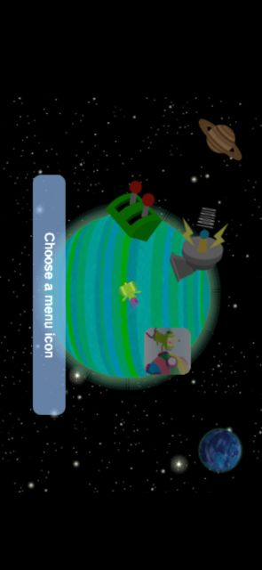
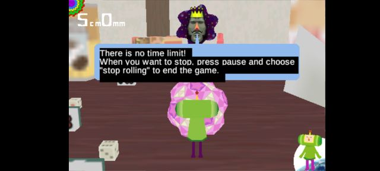
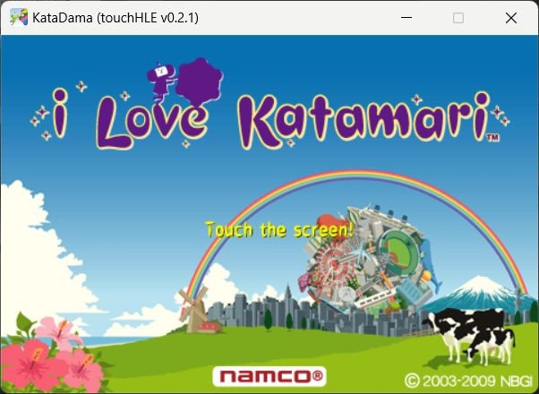
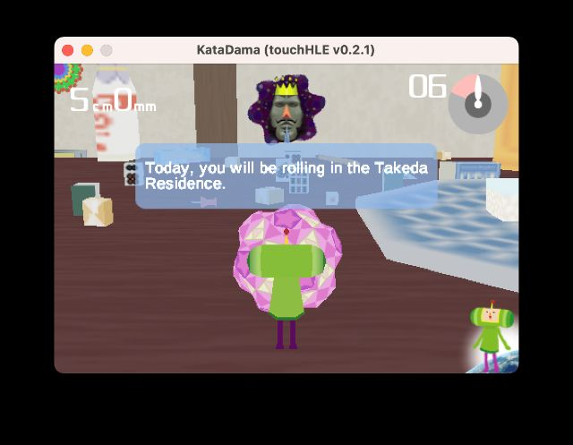
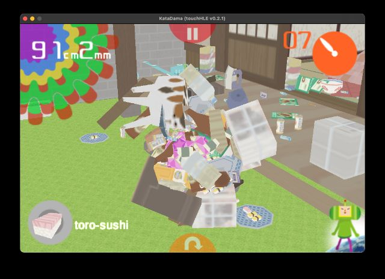
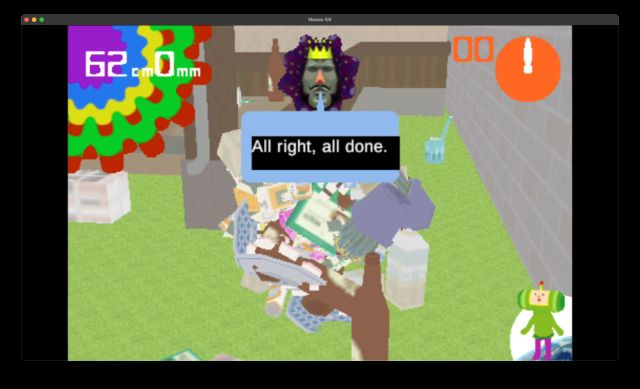

| App name | I Love Katamari |
|---|---|
| Release year | 2008 |
| Developer/Publisher | Namco Bandai Games |
| First reported | |
| First reported by | @hikari-no-yume |
| Version number | Display name | Bundle identifier | Minimum iOS version | Best rating | Last updated | First reported by | |
|---|---|---|---|---|---|---|---|
| 1.0.0 | KataDama | com.namconetworks.katamari | 2.0 | ⭐️⭐️⭐️⭐️⭐️ | @hikari-no-yume | ||
| 1.0.2 | KatamariTrial | com.namconetworks.katamarilite | 2.2.1 | ⭐️⭐️⭐️⭐️⭐️ | @totvrey5 | ||
| 1.0.2 | KataDama | com.namconetworks.katamari | 2.0 | ⭐️⭐️⭐️⭐️ | @ciciplusplus |
| Version number | touchHLE version | Operating system | GPU | Scale hack supported? | Rating | Reported | Reported by | Remarks | Screenshot |
|---|---|---|---|---|---|---|---|---|---|
| 1.0.2 | v0.2.2-380-g98e1938 | Android | Mali-G71 | Yes | ⭐️⭐️⭐️⭐️⭐️ | @totvrey5 | View | ||
| 1.0.2 | v0.2.1 | Android 13 | Adreno 642 | Didn't test | ⭐️⭐️⭐️⭐️ | @griffi-gh | Text blending/transparency is seemingly broken | View | |
| 1.0.2 | v0.2.1 | Windows 11 | NVIDIA Quadro T2000 | Didn't test | ⭐️⭐️⭐️⭐️ | @nighto | On default configuration and using a controller, it would walk forward when left stick is not used. Needs to have "--y-tilt-offset=24" added to options to work properly with controller. After adding it, it controls fine. | View | |
| 1.0.2 | v0.2.1 | macOS Ventura 13.5 | Apple M1 GPU | Partially | ⭐️⭐️⭐️⭐️ | @ciciplusplus | Game crashes on "More games" in the menu, Same issues with the scale hack as on other OSes | View | |
| 1.0.0 | v0.2.1 | macOS Monterey 12.6.3 | Intel HD Graphics 615 | Partially | ⭐️⭐️⭐️⭐️⭐️ | @hikari-no-yume | Scale hack is slightly broken: motion blur effect when katamari grows in size looks wrong, image of katamari in the King's hand after completing a level looks wrong. | View | |
| 1.0.0 | v0.2.1 | Android 8 | Adreno 418 | Didn't test | ⭐️⭐️⭐️⭐️ | @hikari-no-yume | Alpha blending is broken for some reason, making various things look ugly and obscuring the screen for a few seconds when the katamari increases in size. | View |
| Rating | Description |
|---|---|
| ⭐️ | Completely broken: app crashes immediately without any user interaction. |
| ⭐️⭐️ | Only (part of) the main menu, intro or similar is working. |
| ⭐️⭐️⭐️ | Some of the main content of the app works, but with major issues. |
| ⭐️⭐️⭐️⭐️ | The main content of the app works (e.g. entire game is playable) with only small issues. |
| ⭐️⭐️⭐️⭐️⭐️ | Everything works. The app is fully usable. |





